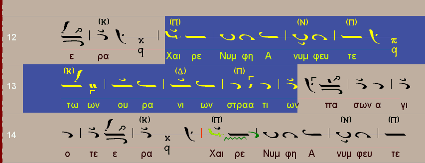

Comments by Chris Contaxis: This is the demo version of a program by the
late Achilleus Angelidis. His son, Nikos Angelidis, after the premature death of
his father in 2005 decided to promote this work. The demo is a fully functional
with the exception that it does not save and does not print. There is a separate
help file. The program is older than Melodos
and does more or less the same things. You write and listen to the music. It also
supports converting Byzantine notation to Western notation.
The program requires a screen resolution of 1024 x 768 and large fonts. Right click
on desktop and click Properties and then Settings. Select 1024x768 and then click
"Advanced" and select 120 dpi in the font size selection dialog. Also make
sure you have installed Greek fonts in your Windows system.
Uncompress (unzip) the program files and run byzan.exe from the location you uncompressed
into. Select the desired language.Once into the program there is a manual with analytic
instructions. If there is any difficulty please contact Mr Chris Contaxis (ask me
for his email).
Download [rar, 4.5 Mb]
Example of the program in action, taken from the manual:

To buy this program please contact Nikos Angelidis at vnem@tellas.gr
{kind=link}